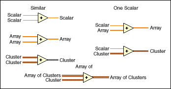
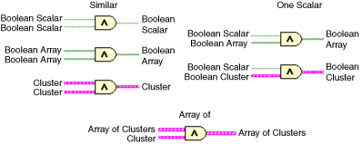

Polymorphism is the ability of VIs and functions to automatically adapt to accept input data of different data types. Functions are polymorphic to varying degrees�none, some, or all of their inputs can be polymorphic. Some function inputs accept numeric values or Boolean values. Some accept numeric values or strings. Some accept not only scalar numeric values but also arrays of numeric values, clusters of numeric values, arrays of clusters of numeric values, and so on. Some accept only one-dimensional arrays although the array elements can be of any type. Some functions accept all types of data, including complex numeric values. You also can create and use polymorphic units.
You can convert any numeric representation to any other numeric representation. When you wire two or more numeric inputs of different representations to a function, the function usually returns the data in the larger, or wider, representation. The functions coerce the smaller representations to the widest representation before execution and LabVIEW places a coercion dot on the terminal where the conversion takes place.
Some functions, such as Divide, Sine, and Cosine, produce floating-point output by default. If you wire integers to their inputs, these functions convert the integers to double-precision, floating-point numbers before performing the calculation. However, you can configure most Numeric functions to return a data type you specify.
For floating-point, scalar quantities, it is usually best to use double-precision, floating-point numbers. Single-precision, floating-point numbers save little or no run time and overflow much more easily. The analysis libraries, for example, use double-precision, floating-point numbers. You should only use extended-precision, floating-point numbers when necessary. The performance and precision of extended-precision arithmetic varies among the platforms.
For integers, it is usually best to use a 32-bit signed integer.
If you wire an output to a destination that has a different numeric representation, LabVIEW converts the data according to the following rules:
The arithmetic functions take numeric input data. With some exceptions noted in the function descriptions, the default output has the same numeric representation as the input or, if the inputs have different representations, the default output is the larger of the inputs. For example, if you add an 8-bit integer and a 16-bit integer, the default output is a 16-bit integer. If you configure the output of a Numeric function, the settings you specify override the default behavior.
The arithmetic functions work on numbers, arrays of numbers, clusters of numbers, arrays of clusters of numbers, complex numbers, and so on. A formal and recursive definition of the allowable input type is as follows:
Numeric type = numeric scalar OR array [numeric type] OR cluster [numeric types]
The numeric scalars can be floating-point numbers, integers, or complex floating-point numbers. LabVIEW does not allow you to use arrays of arrays.
Arrays can have any number of dimensions of any size. Clusters can have any number of elements. The output type of functions is of the same numeric representation as the input type. For functions with one input, the functions operate on each element of the array or cluster.
For functions with two inputs, you can use the following input combinations:
For similar inputs, LabVIEW performs the function on the respective elements of the structures. For example, LabVIEW can add two arrays element by element. Both arrays must have the same dimensionality. You can add arrays with differing numbers of elements; the output of such an addition has the same number of elements as the smallest input. Clusters must have the same number of elements, and the respective elements must be of the same type.
For operations involving a scalar and an array or cluster, LabVIEW performs the function on the scalar and the respective elements of the structure. For example, LabVIEW can subtract a number from all elements of an array, regardless of the dimensionality of the array.
For operations that involve a numeric type and an array of that type, LabVIEW performs the function on each array element. For example, a graph is an array of points, and a point is a cluster of two numeric types, x and y. To offset a graph by 5 units in the x direction and 8 units in the y direction, you can add a point, (5, 8), to the graph.
The following illustration shows the possible polymorphic combinations of the Add function.

The logical functions accept Boolean input data, numeric input data, and error clusters. If the input is numeric, LabVIEW performs a bitwise operation. If the input is an integer, the output has the same representation. If the input is a floating-point number, LabVIEW rounds it to a 32-bit integer, and the output is a 32-bit integer. If the input is an error cluster, LabVIEW passes only the TRUE or FALSE value of the status parameter of the error cluster to the input terminal.
The logical functions work on arrays of numbers or Boolean values, clusters of numbers or Boolean values, arrays of clusters of numbers or Boolean values, and so on.
A formal and recursive definition of the allowable input type is as follows:
Logical type = Boolean scalar OR numeric scalar OR array [logical type] OR cluster [logical types]
except that complex numbers and arrays of arrays are not allowed.
Logical functions with two inputs can have the same input combinations as the arithmetic functions. However, the logical functions have the further restriction that the base operations can only be between two Boolean values or two numbers. For example, you cannot have an AND between a Boolean value and a number. The following illustration shows some combinations of Boolean values for the AND function.

Most of the array functions accept n-dimensional arrays of any type. However, the wiring diagrams in the function descriptions show numeric arrays as the default data type.
String Length, To Upper Case, To Lower Case, Reverse String, and Rotate String accept strings, clusters and arrays of strings, and arrays of clusters. To Upper Case and To Lower Case also accept numbers, clusters of numbers, and arrays of numbers, interpreting them as ASCII codes for characters. Width and precision inputs must be scalar.
The Path To String and String To Path functions are polymorphic. That is, they work on scalar values, arrays of scalars, clusters of scalars, arrays of clusters of scalars, and so on. The output has the same composition as the input but with the new type.
Number To Decimal String, Number To Hex String, Number To Octal String, Number To Engineering String, Number To Fractional String, and Number To Exponential String accept clusters and arrays of numbers and produce clusters and arrays of strings. Decimal String To Number, Hexadecimal String To Number, Octal String To Number, and Fract/Exp String To Number accept clusters and arrays of strings and produce clusters and arrays of numbers. Width and precision inputs must be scalar.
The Bundle and Unbundle functions do not show the data type for their individual input or output terminals until you wire objects to these terminals. When you wire them, these terminals look similar to the data types of the corresponding front panel control or indicator terminals.
The Comparison functions Equal?, Not Equal?, and Select take inputs of any type, as long as the inputs are the same type.
The functions Greater Or Equal?, Less Or Equal?, Less?, Greater?, Max & Min, and In Range and Coerce take inputs of any type except complex, path, or refnum, as long as the inputs are the same type. You can compare numbers, strings, Boolean values, arrays of strings, clusters of numbers, clusters of strings, and so on. However, you cannot compare a number to a string or a string to a Boolean value, and so on.
The functions that compare values to zero accept numeric scalars, clusters, and arrays of numbers. These functions output Boolean values in the same data structure as the input.
The Not A Number/Path/Refnum? function accepts the same input types as functions that compare values to zero. This function also accepts paths and refnums. Not A Number/Path/Refnum? outputs Boolean values in the same data structure as the input.
The functions Decimal Digit?, Hex Digit?, Octal Digit?, Printable?, and White Space? accept a scalar string or number input, clusters of strings or non-complex numbers, arrays of strings or non-complex numbers, and so on. The output consists of Boolean values in the same data structure as the input.
The function Empty String/Path? accepts a path, a scalar string, clusters of strings, arrays of strings, and so on. The output consists of Boolean values in the same data structure as the input.
You can use the Equal?, Not Equal?, Not A Number/Path/Refnum?, Empty String/Path?, and Select functions with paths and refnums, but no other Comparison functions accept paths or refnums as inputs.
Comparison functions that accept arrays and clusters normally return Boolean arrays and clusters of the same structure. If you want the function to return a single Boolean value, right-click the function and select Comparison Mode�Compare Aggregates from the shortcut menu to compare aggregates.
The Logarithmic functions take numeric input data. If the input is an integer, the output is a double-precision, floating-point number. Otherwise, the output has the same numeric representation as the input.
These functions work on numbers, arrays of numbers, clusters of numbers, arrays of clusters of numbers, complex numbers, and so on. A formal and recursive definition of the allowable input type is as follows:
Numeric type = numeric scalar OR array [numeric type] OR cluster [numeric types]
except that arrays of arrays are not allowed.
Arrays can be any size and can have any number of dimensions. Clusters can have any number of elements. The output type is of the same numeric representation as the input, and the functions operate on each element of the cluster or array. Allowable input type combinations for the two-input Logarithmic functions include the following: